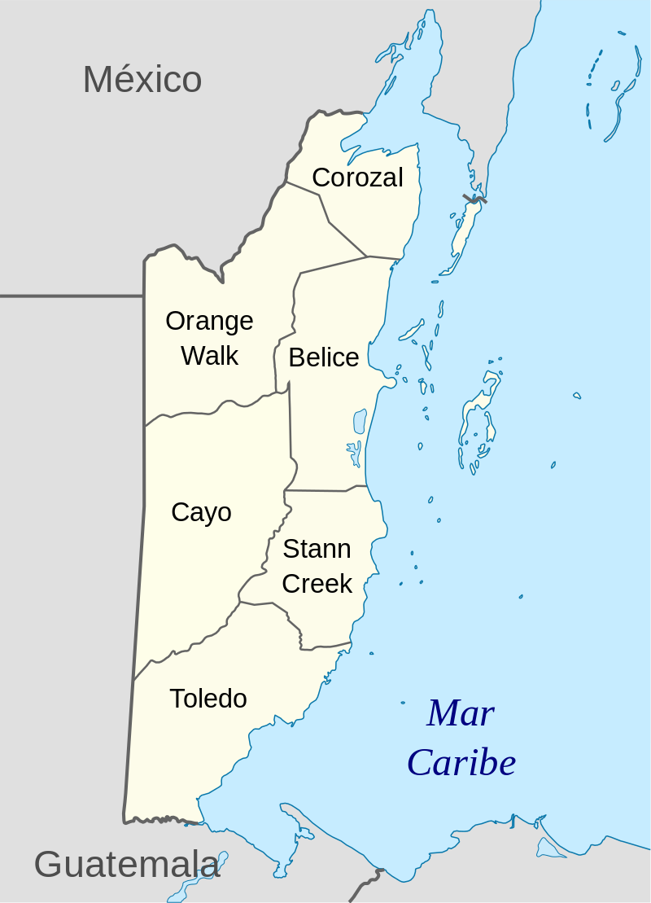
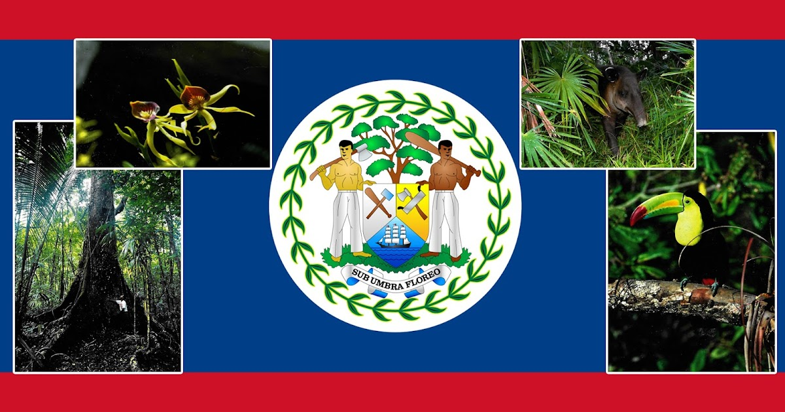
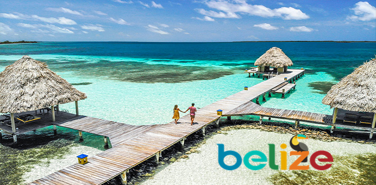

Limita al norte con México y al sur y oeste con Guatemala. El golfo de Honduras lo separa del país homónimo, motivo por el cual fue conocido anteriormente como Honduras Británica, hasta su independencia el 21 de septiembre del año 1981, cuando adquirió el actual nombre por la ciudad de Belice, a su vez nombrada por el río Belice.
Belice tiene un área de 22 800 km2 y una población de 387 879 habitantes (2017). Tiene la menor población y densidad de toda América Central. El crecimiento poblacional anual era de 1.87 % en 2015, el segundo más alto de la región y de los más altos en todo el hemisferio oeste
-

Distritos de Belice
1. Belice
2. Cayo
3. Corozal
4. Orange Walk
5. Stann Creek
6. Toledo
Historia de Belice
Los primeros habitantes de Belice fueron los Mayas, cuya presencia sobre el territorio desde la primera mitad del primer milenio es testimoniada por los vestigios arqueológicos. Belice hacía parte de un imperio que se extendía a otros territorios de América Central, en particular los de Guatemala, Honduras y México actuales.
Los colonos españoles, decepcionados por la ausencia de minerales en Belice, rápidamente descuidaron la región; fueron los británicos quienes se establecieron, en el siglo XVII, y fundaron explotaciones forestales. En la misma época, los piratas ingleses y franceses pillaban los navíos encallados en los numerosos arrecifes coralinos situados a lo largo del litoral.
La explotación de los ricos recursos forestales del país, con ayuda de una mano de obra esclava, permitió a los Baymen (apodo de los británicos) librarse al comercio lucrativo de la caoba. España, seguida por Guatemala, reivindicaron Belice sin haberse establecido jamás en el territorio.
En la batalla decisiva del Cay Saint George en 1798, los Baymen y sus esclavos resistieron a los invasores españoles, pero debieron, para proteger su territorio enclavado en la zona de influencia de España, acudir a la Corona, la que, en 1862, erigió Belice como colonia, bajo el nombre de Honduras-Británica, nombre que guardó hasta 1973.
Belice accedió a la independencia, en el cuadro del Commonwealth, en septiembre de 1981, a continuación de un acuerdo entre Gran Bretaña y Guatemala, la cual renunciaba a sus pretensiones sobre el país. Tropas británicas permanecieron en el lugar para asegurar el respeto de las fronteras del país, pero la normalización de las relaciones con Guatemala les permitió comenzar la retirada en 1994.
Símbolos Patrios
-

Bandera
LLa bandera roja, blanca y azul de Belize es un símbolo de la unidad de su nación. Esta tiene su historia, y es que antes de su independencia del Reino Unido, en 1981, el People’s United Party (PUP) propuso una bandera azul con el escudo de armas en un círculo blanco, similar al símbolo del partido. Por otro lado, El Partido Democrático Unido (UDP) no propuso una bandera, pero pidió una bandera que podría unir a todos los ciudadanos, independientemente de su afiliación política. Como consecuencia, el comité bipartidista de símbolos nacionales invitó a los ciudadanos a presentar sus diseños para una bandera nacional.
El diseño seleccionado por el Comité es una bandera azul marino con una franja roja horizontal en la parte superior, uno en la parte inferior, y un círculo blanco con el escudo en el centro.
Escudo
El escudo está dividido en tres secciones por una línea vertical y una "V" invertida. La base representa la sección de un velero ondulado dominando el mar. Las dos secciones superiores muestran herramientas de la industria de la madera en Belize; un remo y una almádana en la sección derecha y una sierra y un hacha en la sección izquierda.
Soportando el escudo hay dos leñadores, el de la derecha sostiene un hacha sobre sus hombros y el de la izquierda sostiene un remo sobre sus hombros.
Encima del escudo se levanta un árbol de caoba. Debajo del escudo está la leyenda SUB UMBRA FLOREO que significa BAJO la SOMBRA FLORECEREMOS. Una corona de hojas rodea el escudo.
Árbol Nacional (Caoba)
El árbol de caoba (Swietenia Macrophilla) es uno de los gigantes de la magnífica de la selva. El árbol de caoba forma parte del Escudo de Armas de Belice. El lema "Sub Umbra Floreo" significa: Bajo la sombra (del árbol de caoba) florezco.
Flor Nacional (Orquidea Negra)
La Flor Nacional es la Orquídea Negra (Encyclia cocheeata). La Orquídea Negra crece sobre árboles en áreas húmedas y florece casi todo el año. La Orquídea Negra tiene pétalos de color amarillo verdoso y sépalos con manchas púrpuras cerca de la base.
Ave Nacional (Tucan)
El Ave Nacional es el Tucán de Pico Agudo (Ramphastos sulfarantus). El Tucán se conoce por su pico grande con forma de canoa y sus plumas de color encendido verde, azul, rojo y anaranjado. En todo el país, el Tucán habita en áreas abiertas con árboles grandes.
Tapir
Animal Nacional es el Tapir, también conocido como Vaca de Montaña (Tapirello bairdii). Es un animal fuerte, pariente de los caballos y los rinocerontes. Puede pesar hasta 270 kilogramos y generalmente es de color gris con círculos blancos alrededor de los ojos, boca, orejas, y cuello.
Himno Nacional de Belice
¿Quieres visitar Belice? Te dejamos una guía de turismo en la que puedes consultar la amplia gama de lugares que puedes conocer.
Has clic aquí.
-
